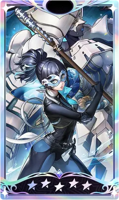

MATOI Mio Natsukawa
Fonte: https://lufel.net/en/character/matoi/ · letto il 2026-11-14 con il browser integrato (spoiler attivi) · Stato Global: rilasciata. Convenzione: nomi di skill, awareness, armi, Persona, set e stat lasciati in inglese come su lufel.net; condizioni ed effetti tradotti in italiano. Valori skill = LV10 / LV10+Minds 5 / LV13 / LV13+Minds 5. Valori armi = refinement R0/R1/R2/R3/R4/R5/R6.
Scheda#
| Campo | Valore |
|---|---|
| Nome | Mio Natsukawa |
| Codename | MATOI |
| Persona | Minthe |
| Rarità / tipo | 5★ · Limited |
| Elemento | Ice |
| Posizione | Saboteur |
| Ruolo (lufel) | AOE Debuffer |
| Tag (lufel) | Defense Reduction · Damage Taken · Ice TECHNICAL · Shield · Technical Precision · Freeze |
| Resistenza / Debolezza | Res: Ice · Wk: Bless |
Character Review (lufel)#
- Debuffer AoE di DEF Down incentrata sul TECHNICAL e specializzata in setup con Burn.
- Ottiene i suoi stack unici all'inizio del turno e usando la Skill 1; raggiunti 4 stack, la Skill 3 si potenzia notevolmente.
- Primo personaggio a introdurre effetti di tipo TECHNICAL: usa l'Ice Technical: infliggendo danno TECHNICAL a un nemico con Burn, può applicare un effetto di 2 turni che aumenta il danno Fire/Ice subito dal bersaglio.
- La Skill 1 concede "Technical Precision" quando attacca un nemico con Burn, potenziando i suoi effetti TECHNICAL. Per questo è cruciale applicare Burn ad almeno un nemico, e i giocatori si affidano spesso ai Fire Item Charm o alla Persona Throne.
- Technical Precision: influenza la potenza degli effetti TECHNICAL aggiuntivi. Ogni 100 punti (i valori sotto 100 scalano proporzionalmente): "Fireburn": bonus al danno delle skill +10% · "Short Circuit": bonus al danno delle skill +10% · "Iceburn": danno Fire/Ice subito +5% · "Windburn": danno aggiuntivo +6% · "Deepfreeze": probabilità base di attivazione +2.5%. Per i dettagli lufel rimanda alla guida "TECHNICAL Enhancement - Technical Precision".
Pro - Fornisce alti valori di DEF Down. - Può potenziare gli effetti TECHNICAL.
Contro - Richiede di applicare Burn ai nemici.
Recommended Setup (lufel)#
Nota lufel: le impostazioni consigliate sono basate su contenuti futuri; alcune funzioni potrebbero non essere ancora disponibili (Revelation, Mindscape, ecc.).
- Revelation — Space: Faith (tooltip "Faith - Futility": aumenta del 10% il danno inflitto dagli alleati ai nemici con alterazioni technical; non si attiva se cumulato) · Sun/Moon/Star/Sky: Futility ×4 (2-Set: Attack +12% · 4-Set: Ailment Accuracy +30% per 2 turni; si riapplica dopo aver inflitto un Technical)
- Main Options — Sun: HP · Moon: Attack / Damage Mult · Star: Ailment Accuracy / Crit Rate · Sky: Attack
- Sub Options — 1ª priorità: Ailment Accuracy · 2ª: Crit Rate / Crit Mult · 3ª: Attack, Damage Mult
- Recommended Stats — LV10: Ailment Accuracy 171% · LV10+Minds 5: Ailment Accuracy 189% · LV13: Ailment Accuracy 182% · LV13+Minds 5: Ailment Accuracy 200%
- Battle Entry + — Thieves Den 2.3% (o più) · Thieves Den Rating · Futility: +30% di Ailment Accuracy per 2 turni
- Priorità skill — 1º Skill 3 · 2º Skill 1 · 3º Highlight (MAX) · 4º Skill 2 (livello 8)
- Mindscape (LV 5) — Rank Strengthening 1: Damage Mult 16% · Rank Strengthening 2: Ailment Accuracy 24% · Skill Enforce 1: Skill1 / Skill2 · Skill Enforce 2: Skill3 / HIGHLIGHT
- Skill Rotation — A0: 1 › 3 › 1 › 3 › 1 › 3 · A6: 1↺+3 › 1↺+3 › 1↺+3 › 1↺+3 › 1↺+3 › 1↺+3
- Notes (lufel) — ↺ = uso automatico · La Skill 1 richiede un nemico in stato Burn
Skills (LV10 / LV10+Minds 5 / LV13 / LV13+Minds 5)#
Skill 1 — Sub-Zero Torrent (Ice · SP 22) Ottiene 1 stack di Extinguish e infligge danno Ice a tutti i nemici pari al 97.6%/107.6%/103.6%/113.6% dell'Attack; 50% di probabilità di applicare Freeze. Inoltre riduce la Defense del 7.8%/8.6%/8.3%/9.1% per 3 turni (ogni 5.47% di Ailment Accuracy di Natsukawa, −1% di Defense in più, fino a un massimo del 31.2%/34.4%/33.2%/36.4%). Quando un alleato attacca un nemico la cui Defense è stata ridotta da questa skill, Technical Precision +195/195/207/207. Se almeno 1 nemico ha Burn, rimuove Burn e applica Scald a tutti i nemici (non applicabile se Scald è già attivo). Scald: conta come Burn; dura 3 turni; quando gli alleati attaccano il nemico affetto, Technical Precision +1186/1308/1259/1381.
Skill 2 — Freezing Prison (Ice · SP 24) Infligge danno Ice a 1 nemico pari al 195.2%/215.2%/207.2%/227.2% dell'Attack e può attivare un Ice Technical. Quando si attiva Deepfreeze, 48.0%/52.9%/51.0%/55.9% di probabilità di applicare Icebound.
Skill 3 — Extinguishing Guidance (Ice · SP 25) Usabile con 2 o più stack di Extinguish. Spende 2 stack di Extinguish per infliggere danno Ice a tutti i nemici pari al 109.8%/121.0%/116.6%/127.8% dell'Attack. Inoltre riduce la Defense del 7.3%/8.1%/7.8%/8.5% per 2 turni (ogni 5.83% di Ailment Accuracy di Natsukawa, −1% in più, fino al 29.3%/32.3%/31.1%/34.1%). Può attivare un Ice Technical; quando si attiva Iceburn, l'effetto evolve con certezza in Cold Flames. Cold Flames: danno subito +9.8%/10.8%/10.4%/11.4% (ogni 4.38% di Ailment Accuracy, +1% in più, fino al 39.0%/43.0%/41.4%/45.4%). Con 4 o più stack di Extinguish, la skill evolve in Requiem Guidance: spende 4 stack di Extinguish per infliggere danno Ice a tutti i nemici pari al 131.8%/145.3%/139.9%/153.4% dell'Attack; riduce la Defense dell'8.8%/9.7%/9.3%/10.2% per 2 turni (ogni 4.86% di Ailment Accuracy, −1% in più, fino al 35.1%/38.7%/37.3%/40.9%); può attivare un Ice Technical e, quando si attiva Iceburn, evolve con certezza in Cold Flames: danno subito +11.7%/12.9%/12.4%/13.6% (ogni 3.65% di Ailment Accuracy, +1% in più, fino al 46.8%/51.6%/49.7%/54.5%).
HIGHLIGHT (cooldown 4 turni) Infligge danno Ice a tutti i nemici pari al 39.0%/43.0%/41.4%/45.4% dell'Attack e aumenta il loro danno subito per 2 turni (ogni 5.83% di Ailment Accuracy di Natsukawa, +1%, fino al 29.3%/32.3%/31.1%/34.1%). Può attivare un Ice Technical; quando si attiva Deepfreeze, 32% di probabilità di applicare Icebound. Inoltre aumenta il danno subito dai nemici a cui questo Highlight ha applicato Freeze (ogni 17.5% di Ailment Accuracy, +1%, fino al 9.8%/10.8%/10.4%/11.4%). Poi infligge danno Ice aggiuntivo a tutti i nemici pari al 117.1%/129.1%/124.3%/136.3% dell'Attack.
Passiva — Disaster Preparedness: ogni volta che Natsukawa attiva un Technical, concede a tutti gli alleati uno scudo da 1050 danni per 2 turni.
Passiva — Biting Cold: quando Natsukawa è presente, aumenta del 27.0% il danno subito dai nemici con Freeze e del 27.0% quello dei nemici con Icebound.
Awareness#
- A0 — Smothering Agony (talento base): alcune skill e l'Highlight possono attivare Ice Technical. Inoltre, quando infligge danno Ice, ignora la resistenza Ice dei nemici. All'azione di Natsukawa ottiene 1 stack di Extinguish (massimo 4). Usando Extinguishing Guidance spende stack di Extinguish e applica 1 stack di Damnation a tutti i nemici per ogni stack speso. Damnation: danno subito +6% per 2 turni; cumulabile fino a 4 volte.
- A1 — Cooling Spray: usando Sub-Zero Torrent ottiene 1 stack di Extinguish in più. Spendendo stack di Extinguish, aumenta del 30% il danno critico subito da tutti i nemici per 2 turni.
- A2 — Frozen Gateway: spendendo stack di Extinguish, aumenta Attack del party +20%, Defense +30% e danno inflitto +15% per 2 turni.
- A3 — Whirlpool Cannon: aumenta di 3 i livelli di skill di Extinguishing Guidance e Thief Tactics.
- A4 — Terrifying Chill: Highlight Enhanced: estende di 1 turno la durata dell'effetto di aumento del danno subito; inoltre, quando l'Highlight attiva Deepfreeze, la probabilità di applicare Icebound diventa 44%.
- A5 — Wellspring of Grief: aumenta di 3 i livelli di skill di Sub-Zero Torrent e Freezing Prison.
- A6 — Firefighter's Soul: se i nemici hanno Burn o Scald all'azione di Natsukawa, attiva 1 volta Sub-Zero Torrent su quel nemico. Inoltre, quando lo stesso nemico viene attaccato ripetutamente con Extinguishing Guidance o Requiem Guidance, aumenta di un ulteriore 25% il danno subito dal bersaglio per 1 turno. Il massimo di stack di Damnation diventa 6.
Stats#
- Base (LV1): HP 316 · ATK 90 · DEF 55 · Speed 104
- Hidden Ability LV7: Ailment Accur. 34.9%
- LV80 (HP / ATK / DEF): A0 3540 / 1020 / 627 · A1 3604 / 1038 / 638 · A2 3667 / 1057 / 649 · A3 3731 / 1075 / 660 · A4 3795 / 1094 / 671 · A5 3858 / 1112 / 683 · A6 3922 / 1130 / 695
Armi esclusive (valori R0/R1/R2/R3/R4/R5/R6)#
5★ Entropy — HP 2339 · ATK 674 · DEF 414 — passiva Conflagrations, Dauntless - Aumenta l'Ailment Accuracy del 36.0%/36.0%/47.0%/47.0%/58.0%/58.0%/69.0%. - In battaglia aumenta l'Attack in base al 66.0%/68.0%/68.0%/70.0%/70.0%/72.0%/72.0% dell'Ailment Accuracy di Natsukawa. - Inoltre, ogni volta che si attiva un Ice Technical, riduce ulteriormente la Defense del bersaglio del 23.3%/30.3%/30.3%/37.3%/37.3%/44.3%/44.3% per 2 turni.
4★ Abyssal Thorn — HP 1871 · ATK 539 · DEF 331 — passiva Waterflowing Afterglow - Aumenta l'Attack del 12.0%/12.0%/16.0%/16.0%/20.0%/20.0%/24.0%. - Per ogni stack di Extinguish, aumenta l'Ailment Accuracy del 6.0%/7.8%/7.8%/9.6%/9.6%/11.4%/11.4%.
Attribute Mindscape (lufel: introdotto in KR V5.2, forse non ancora su Global)#
- Mindscape Synergy — nessuna consigliata da lufel (slot vuoto, "Click to select").
- Mindscape Combat Skill — nessuna consigliata da lufel (slot vuoto, "Click to select").
Recommended Combination (lufel)#
Nota lufel: alcune Persona e armi consigliate potrebbero non essere ancora uscite nella tua regione. - Wonder Weapons: non indicate. - Persona (ATK): Throne - Persona (REDUCE DEF): Nian
Recommended Parties (lufel)#
Nota lufel: la maggior parte degli esempi di party è stata scritta attorno all'uscita KR/CN del personaggio; Thieves o Mindscape Core successivi potrebbero non essere considerati. Solo riferimento. - Lineup — RIN·Firecracker: Mio potenzia gli effetti TECHNICAL e condivide la meccanica che richiede nemici con Burn. · BUI: se Mio è ad A6, può infliggere danno due volte in un turno con skill Persona, permettendo di attivare più spesso il Follow-up di YUI. - Party d'esempio — MATOI / RIN·Firecracker / CROW / ORACLE · MATOI / RIN·Firecracker / WIND·Tempest / ORACLE
Nomenclatura#
- lufel: "Mio Natsukawa" (codename MATOI), slug URL
matoi. Stati/risorse: Extinguish, Damnation, Scald, Cold Flames, Icebound, Requiem Guidance (evoluzione della Skill 3), Technical Precision, Ice Technical (Iceburn / Deepfreeze). - Nelle descrizioni lufel "ailment accuracy" = Ailment Accuracy, "critical damage" = Crit Mult.